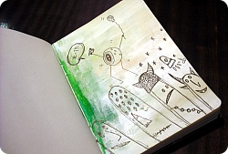
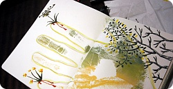

며칠전에 우연히 '좀 둔감(?)한 여자애들 공감리스트' 뭐 이런글을 읽은적이 있다
1.친구가 화나도 그걸 못 알아차린다
2.알아차려도 왜 화가 났는지 이유를 모르겠다
3.일단 사과하고 나서도 계속 모르다가 나중에 딴 친구한테 이유를 듣게된다
4.어디 긁히거나 상처가 났는데 며칠 뒤에야 알게된다
5.알아도 신경을 안쓴다
6.엄청 중요한 일이 아니면 잘 까먹는다
7.특히 안좋은 감정은 하루이틀만 지나면 거의 다 사라진다
여기서 1/2/3번 격하게 공감;;; OTL
(사실 4/5/6/7은 상황따라 다르다능^^;;)
게다가 난 3. 일단 사과하고....에서 - 난 상대방이 화가났다는 사실조차
전혀 모르기때문에 난 사과조차 안한다;;;;OTL;;;
그리고 한 반년~일년 지난후에
건너건너건너~~사람에게 듣게되는 경우가 부지기수;;;;;
이 글에 달린 댓글중
"나 저런 친구있는데 나는 화나서 속상한데
눈치 못채고 눈 앞에서 생글생글 웃고있으면 정말 속터져요~"
이걸 본 순간 '헉;;;' 했음;;; OTL
그동안 내 주위의 수많은 아가씨들께 죄송;;;;(굽신굽신)
근데 대부분 (내가보기에) 천상 아가씨 성격의 주변친구들은
화가나면 내가 왜 화가났고 너의 이런점이 좀 불편했어!!
라고 나에게 말을 해주는게 아니라
자신이 삐진걸 알아차려주길 바라면서 연락을 끊는다던가
그냥 나에게 틱틱거리는데;;
문제는 내가 삐진것도 전~~혀 눈치를 못챌뿐더러
연락이 없어도 그냥 바쁜가보다 하고(.........;;)
방치하다가 짧으면 보름 길면 한 세달뒤에서야 '어라?' 라는 생각으로
연락을 해본다;;; (그러고 나서 내가 연락하자마자 상대방에게서 터져나오는
격한 하소연?? 화풀이?? 너 너무하는거 아니냐는 ㅡㅡ;)
그럼 그당시에는 나는 생각조차 못한 격한 반응에 놀라서
우선 미안하다고 사과는 하고보는데
나중에 시간이 지나면 살짝 억울하기도 하다 ㅡㅡ;;;
사실 이게 일방적으로 내가 뭘 엄청 잘못한게 아니라
성격이 다르거나 사고방식이 달라서 생기는게 더 많지 않은가??
근데 일방적으로 상대방이 "너 너무해 어어어엉~~!!!"
이러고 마구 울어버리면 우선 당황해서 급사과 ㅡㅡ;;;
그리고 이런 이야기를 동생곰에게 했더니
동생곰曰 : 누나 그 친구랑 사귀어? 대화내용이 꼭 커플싸우는거 같아;;;
라고했음;;;; OTL
씨바 내가 전생에 나라를 찌질하게 구해서 그렇다 ㅜㅜ
최근에 또 급사과(?)를 할일이 생겨서 런던댕겨왔음;;;
가는김에 북바인딩 가게도 들려주시고
최근 아래층 Y양의 도움으로 실제본 / 하드커버
처음해봤는데 대따 잼났음 +_+
잽싸게 재료사왔다 ㅎㅎㅎㅎ
(갑자기 딴소리^^;;;)
사건(?)의 발단은........
머언~~~먼 옜날 '나중에 시간나면 같이 어디어디 놀러가자!!'라고
가볍게 약속(?)을 했었는데
시간이 꽤 지났는데도 아무말없길래 까먹었나 싶은와중
우연히 내가 아는사람이 생겨서 그 장소에 갈일이 있었당
그래서 혼자 낼름 댕겨왔고 - 이게 4월
내가 댕겨온 사실을 최근에 우연히 알게되어서 - 이게 6월
삐져...............ㅆ다기 보다는 뭔가 격하게 실망한 눈치 ㅡㅡ;;;
자기가 넘 늦었다는둥 / 기회를 놓쳤다는둥
상대방 기분이 마구 다운되어서;;
딱히 내가 뭘 대따 잘못한것 같진 않은데
미안하긴 되게 미안한 기분;;;;;
암튼 그래서 커피숍가서 놀쟈~만나쟈~해서 일욜날 런던댕겨왔다
.
.
.
.
.
.
.
.
근데 얜 남자앤데 ㅡㅡ;;;;;;
주로 이건 여자가 삐지고 남자가 달래러 가는거 아닌감??
난 왜 이 상황에서도 역할이 바뀐게지??? ㅜ_ㅜ
뭐;; 여튼 잘 놀고왔습니당
변함없이 커피숍에서 멍때리다가
그림그리다가 수다떨다가
일본어랑 영어가 섞인 괴상한 대화하다가^^;;;;
그림그리는 C군
치사하게 완성되기 전까지 안보여 준다 ㅋㅋㅋㅋ

요즘 빠져있는 손바닥 / 손가락 그리기
요건 C군 손가락 ㅋㅋㅋ

요건 내 손바닥
파이널 프로젝트하면서
배경칠하구 남은 아크릴 물감 그냥 버리기 아까워서
스케치북 중간중간에 저렇게 색을 칠한다던가
손바닥을 찍어놓는다던가 해놨다
그 위에 그림 그리는 재미가 쏠쏠함^^***
이 그림은 정말 아무생각없이 손가는대로 나무나 풀등
식물을 마구 그려대었는데
완성된게 마음에들었다능//ㅅ//
심심하면 그리는 몬스터 / 이상한 괴생명체들 ^^;;
커피숍에서 낙서하는거 넘 재밌어용///
+ 비슷하면서 촘 다른이야기
성격이 그닥 섬세하지 못하다보니 가끔
'아니 나름 art쪽 공부하는애가 이래도 되나?' 라고 걱정도 되는데;;
길거리 걸으면서 길에핀꽃/유럽의 아기자기한 집들 예쁘다고 감탄하는
아가씨들보면 신기하고 공감도 잘 못한다;;
(하지만 베를린에서 현대식 건축물 보고는 굉장히 기뻐했음//
우워~~!!! 대따 멋져~!!! 라믄서 ㅡㅡ;;)
전에 한국서 엄마님이 봄에 꽃구경 가자면서 드라이브 갔을때도
엄마님 : 딸~저거봐봐 어머나 세상에~벌써 꽃이 이렇게 많이폈네~
저 개나리봐봐~어머나~벌써 봄이야~예뻐라///
나 : 엉 ㅡㅡ;;; 졸X게 많이 폈네 ㅡㅡ;;;
................이런식이라;;;; 가끔 촘 고민(??) 걱정(???)은 한다능;;;
같이사는 일본애들한테도 너는 별로 걱정거리고 없고
항상 여유네~ 라는 소릴 자주들었는데;;
'얘들아 그건 내가 밖으로 표현을 안할뿐이지 속에서는
오만 진상 다 부린단다 ㅡㅡ;;;/ 라고 생각'만' 하고 어설프게 웃어주었음 ㅡㅡ;;;;
이렇게 속으로 꾹꾹 누르는 편이다 보니
반대로 자기 고민이나 걱정을 밖으로 발산해서 스트레스를 푸는
아가씨들한테 엄청좋은 '들어주는 역할'이 된다는게 문제라면 문제;;;
싫은 소리를 입밖으로 내는걸 좀 병적으로 싫어하는 편이라
힘들다 / 죽겠다 / 무서워 앞으로 어떻게 해야해 / 모르겠다
등등의 소리가 애교로 봐줄수 있는 수준이면 상대해주는데
내 얼굴만 봤다하면 세상 모든 자신의 고민이 생각나는지 징징거리기 시작하믄
슬그머니 자리를 피한다 ㅡㅡ;;
저런건 피하는게 상책이지 암;;;
가끔 저런애들 지구평화랑 외계인의 침략은 걱정이 안되냐고 물어보고 싶다 ㅋㅋ
비슷한 맥락으로 자신이 바쁜걸 굉장히 남에게 어필하는 사람도 피하는 편인데
이게 진짜 미치게 바쁘면 남한테 찡찡거릴 여유조차 없지 않나? ㅡㅡ;;
'너무나도 바쁜 나' 에 도취되어서
'나좀 봐죠~ 나 일케 바빠~나 대단하지~'를 발산하는 사람은
내 성질머리로는 상대하기 너무 벅차다;;;;
처음에는 내가 너무 저런걸 못견뎌해서
내 성격이 이상한가?? ㅜㅜ 라고 심각하게 고민한 적도 있었음;;;;
나같이 속으로 꽁꽁 쌓는 타입이 있는가하면 반대로 저렇게
발산해야 스트레스가 풀리는 사람도 있는게지!!
라고 이해를 해보려해도 이건 기본 마인드가 다르니께
내가 이해할수 있는 범위도 아니구 또 이해한다쳐도
그 하소연을 쏟아낼 대상이 내가되는건 사양하고 싶다 ㅡㅡ;;;
일미리 단위 일초단위의 고민/불안함에 동참 못해줘서 미안타;;
난 '되면하구 안되면 아쉽지만 할수없지 탯!!' 타입이라^^;;;;
...............대인배의 길은 멀고도 험하고나;;;;
(그나저나 왯 헛소리를 이렇게;;;
이번주는 내내 final show기간인데 드디어 미쳐가는겐가;;;;OTL)